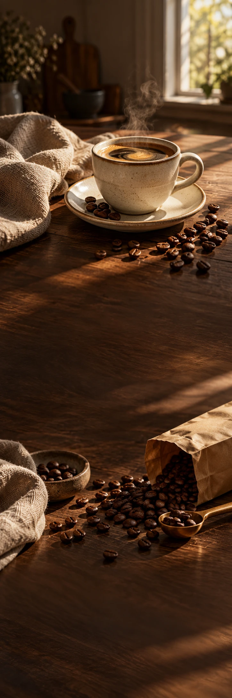

BRUIN
KoffieEducatie · flow 2/3
HET OCHTENDRITUEEL · 02
Even wachten.
Dat is het hele idee.
Een beetje aandacht maakt je koffiemoment anders.
Begin met versgemalen koffie. Schenk rustig en geef de geur even de ruimte. Zoek een fijne plek. De eerste slok is helemaal voor jou.
Lees de zetgidsDe rest van
de dag komt zo.
Een beetje aandacht maakt je koffiemoment anders.
Lees de zetgids